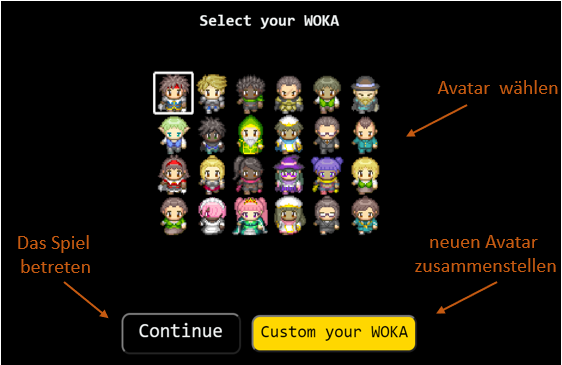

Willkommen im Campus Adventure der Hochschule Kaiserslautern!
Dieses MMPORG-Spiel wurde von den Studierenden im Kurs "Agile Software Entwicklung" im Studiengang "Information Management"
des Fachbereichs BW im Corona-Jahr 2021 entworfen, um uns allen ein bisschen "Campus Feeling" zurückzugeben,
Online-Events durchzuführen und
Freunde wieder zu treffen, egal wo sie sich gerade aufhalten.
Entwicklung: Stevan Dejanovic, Anastasiia Gebhard, John Bui, Melike Schlachter, Rebecca Rein, Jörn Montag, Sebastian Wnuk, Dennis Pyka, Patrick Meppe, Matthias Bohnenberger, Khaled Chick Khattab, Ossman Shekhmos, Seyana Sivanantham, Dennis Semke und Youssef Chahmi Professor: Prof. Dipl.-Ing. Klaus Knopper und Prof. Adrian Müller
Fachbereiche: Bauen und Gestalten, Angewandte Ingenieurwissenschaften
Campus Pirmasens
Fachbereiche: Angewandte Logistik- und Polymerwissenschaften
Informationen über die Bedienung des WorkAdventure:
Anleitung
Gib vor dem Spiel einen Namen ein (max. acht Zeichen).
Nach der Bestätigung mit Continue, kann ein eigener Avatar gewählt oder erstellt werden.

Beim Start kannst du festlegen, ob du die Kamera und/oder das Mikrofon freischaltest- abhängig davon, ob und wie du mit anderen
Spielteilnehmern kommunizieren willst.
Die Freigabe ist aber auch jederzeit problemlos während des Spiels möglich.
Im Browser werden die ausgewählten Einstellungen gespeichert.
Während des Spiels kannst du jederzeit in die Karte rein- und rauszoomen.
Über das Hamburger-Menü oben links können verschiedene Einstellungen, unter anderem Name und Avatar nachträglich angepasst werden.
Wenn du auf andere Besucher triffst, startest du automatisch eine Unterhaltung.
Und nun: Viel Vergnügen an deiner virtuellen Hochschule!
Funktionen
Rein-/RauszoomenStrg+ ,
Strg-
Bewegen: Pfeiltasten:
→ ,
← ,
↑ ,
↓ bzw.
W ,
A ,
S ,
D
Rennen:⇧ Shift + Pfeiltasten bzw.
⇧ Shift +
W ,
A ,
S ,
D
Beachte: Konversationen werden beim Rennen unterbrochen. Beim Laufen bleibt die Verbindung so lange bestehen,
bis sich eine Person außerhalb des Kommunikationsradius (Kreis) begibt.
Kommunikation: Startet automatisch, sobald man in den Kommunikationsradius gerät.
Chillout areas/ Ruheräume: Keine Kommunikation möglich.
Raum wechseln:
Nutze Treppen und Türen, um in andere Räume oder Gebäude zu gelangen.
Wände:
Die Avatare können nicht über alle Objekte laufen. Wände grenzen die Räume und den Bewegungsradius ein.
Stummschaltung:
Das Stummschalten-Symbol markiert Ruhe oder Pausenräume. Hier ist keine Kommunikation möglich.
Jitsi:
Das Kamera-Symbol markiert Bereiche, in denen es möglich ist mit mehreren Spielern über Jitsi zu kommunizieren.
Menü:
Beim Klicken des Menü-Buttons kannst du deine Einstellungen tätigen und auch deinen Avatarnamen ändern.
Infopunkt:
Hier bekommst du Informationen rund um die Hochschule.
Spielregeln
Beleidige keine anderen Mitspieler und Verhalte dich angemessen!
Wenn jemand die Kommunikation ablehnt oder beendet, dann akzeptiere es.
Wenn du an einer Gruppenkonferenz teilnimmst, verhalte dich angemessen!
Stelle sicher, dass man dich sieht! (Vorausgesetzt du möchtest es)
Stelle sicher, dass man dich hört! (Vorausgesetzt du möchtest es)
Fotos von anderen in einer Konferenz zu machen ist verboten!


 Das Stummschalten-Symbol markiert Ruhe oder Pausenräume. Hier ist keine Kommunikation möglich.
Das Stummschalten-Symbol markiert Ruhe oder Pausenräume. Hier ist keine Kommunikation möglich.
 Das Kamera-Symbol markiert Bereiche, in denen es möglich ist mit mehreren Spielern über Jitsi zu kommunizieren.
Das Kamera-Symbol markiert Bereiche, in denen es möglich ist mit mehreren Spielern über Jitsi zu kommunizieren.
 Beim Klicken des Menü-Buttons kannst du deine Einstellungen tätigen und auch deinen Avatarnamen ändern.
Beim Klicken des Menü-Buttons kannst du deine Einstellungen tätigen und auch deinen Avatarnamen ändern.
 Hier bekommst du Informationen rund um die Hochschule.
Hier bekommst du Informationen rund um die Hochschule.